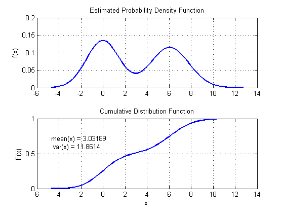
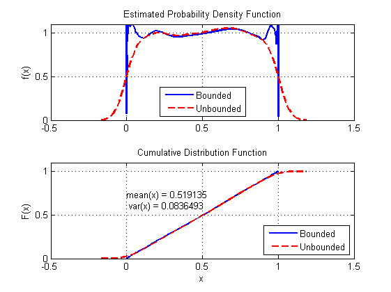
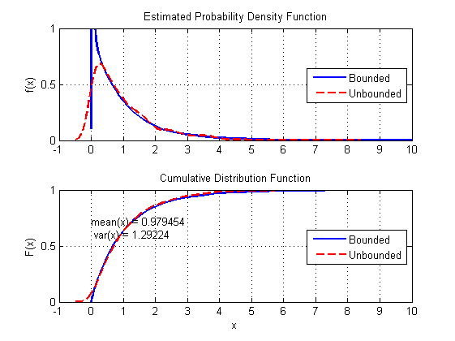
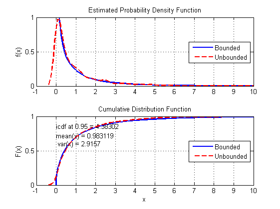
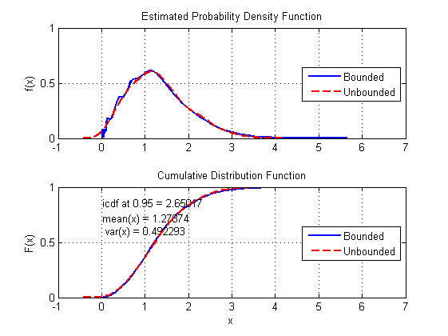

Gaussian Kernel Density Estimation Demonstration
Several examples show how to use the gkdeb function.
Contents
- Distribution with unbounded support
- Distribution with upper and lower bounds: uniform distribution
- Distribution with lower bound only: exponential distribution
- Distribution with lower bound only: log-normal distribution
- Distribution with lower bound only: chi-square distribution
- Distribution with lower bound only: Rayleigh distribution
Distribution with unbounded support
Distribution with two peaks.
x = [0.1*randn(50,1); randn(50,1)+6]; gkdeb(x);
Distribution with upper and lower bounds: uniform distribution
clear x=rand(10000,1); % PDF with bounded support p.lB=0; p.uB=1; fhandle=figure; gkdeb(x,p); % Compare with unbounded PDF estimate p=gkdeb(x); figure(fhandle) subplot(211) hold plot(p.x,p.pdf,'r--','linewidth',2); axis([-0.5 1.5 0 1.1]) legend('Bounded','Unbounded','Location','South') subplot(212) hold plot(p.x,p.cdf,'r--','linewidth',2); axis([-0.5 1.5 0 1.1]) legend('Bounded','Unbounded','Location','SouthEast')
Current plot held Current plot held
Distribution with lower bound only: exponential distribution
clear x=-log(rand(1000,1)); % PDF with bounded support p.lB=0; p.uB=inf; fhandle=figure; gkdeb(x,p); % Compare with unbounded PDF estimate p=gkdeb(x); figure(fhandle) subplot(211) hold plot(p.x,p.pdf,'r--','linewidth',2); axis([-1 10 0 1]) legend('Bounded','Unbounded','Location','East') subplot(212) hold plot(p.x,p.cdf,'r--','linewidth',2); axis([-1 10 0 1]) legend('Bounded','Unbounded','Location','East')
Current plot held Current plot held
Distribution with lower bound only: log-normal distribution
clear x=exp(randn(1000,1)); % PDF with bounded support p.lB=0; p.uB=inf; fhandle=figure; gkdeb(x,p); % Compare with unbounded PDF estimate p=gkdeb(x); figure(fhandle) subplot(211) hold plot(p.x,p.pdf,'r--','linewidth',2); axis([-1 10 0 1]) legend('Bounded','Unbounded','Location','East') subplot(212) hold plot(p.x,p.cdf,'r--','linewidth',2); axis([-1 10 0 1]) legend('Bounded','Unbounded','Location','East')
Current plot held Current plot held

Distribution with lower bound only: chi-square distribution
clear x=randn(1000,1).^2; % PDF with bounded support p.lB=0; p.uB=inf; p.alpha=0.95; fhandle=figure; gkdeb(x,p); % Compare with unbounded PDF estimate p=gkdeb(x); figure(fhandle) subplot(211) hold plot(p.x,p.pdf,'r--','linewidth',2); axis([-1 10 0 1]) legend('Bounded','Unbounded','Location','East') subplot(212) hold plot(p.x,p.cdf,'r--','linewidth',2); axis([-1 10 0 1]) legend('Bounded','Unbounded','Location','East')
Current plot held Current plot held
Distribution with lower bound only: Rayleigh distribution
clear x=sqrt(randn(1,1000).^2 + randn(1,1000).^2); % PDF with bounded support p.lB=0; p.uB=inf; p.alpha=0.95; fhandle=figure; gkdeb(x,p); % Compare with unbounded PDF estimate p=gkdeb(x); figure(fhandle) subplot(211) hold plot(p.x,p.pdf,'r--','linewidth',2); axis([-1 7 0 1]) legend('Bounded','Unbounded','Location','East') subplot(212) hold plot(p.x,p.cdf,'r--','linewidth',2); axis([-1 7 0 1]) legend('Bounded','Unbounded','Location','East')
Current plot held Current plot held